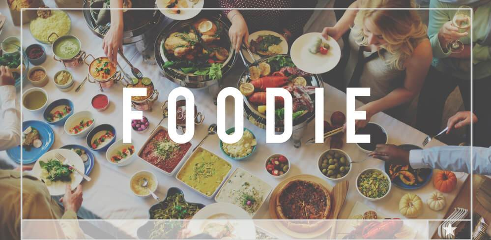

Provided below are a few recipes for some favorite dishes of mine! A majority of these are found on the internet and are a bit different from how I actually make them but are very similar. Some recipes are some that I saw on YouTube and wanted to make! I hope that you take a look at these recipes and try making them yourself!
I'm a bit of a foodie and so this project was perfect for me! I end up watching a lot of cooking YouTube videos or trying out different restaurants. I also love checking out places for sweets! I LOVE milk tea, japanese food, and sweet desserts. The recipes I've included are dishes that I actually enjoy and have made before!